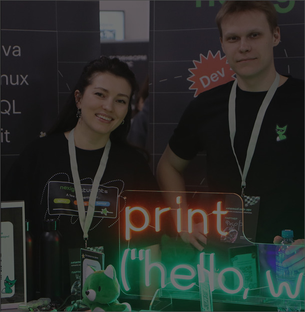
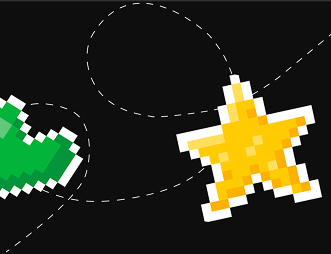

Nexign
CV Review
Nexign CV Review заботится о том, чтобы начинающие специалисты уверенно выходили на рынок труда: вы отправляете своё резюме, а HR-специалист Nexign бесплатно разбирает его и присылает рекомендации на почту. Так вы узнаете, как лучше рассказать о своём опыте, проектах и навыках, и сможете подать заявку на стажировку с сильным резюме.
Преимущества использования сервиса для пользователя
1
Бесплатно
Разбор резюме не требует оплаты и не накладывает обязательств.
2
Эксперт Nexign
Резюме читает HR-специалист, который сам собирает стажёров.
3
Рекомендации на почту
Конкретные советы по структуре, опыту и подаче информации.
4
Сильная заявка
Подайте заявку на стажировку с резюме, которое заметят.
Вопросы и ответы

Да, разбор полностью бесплатный. Мы хотим помочь начинающим специалистам увереннее выходить на рынок труда.
Заполните заявку: укажите ФИО, рабочий email, интересующие направления стажировки и приложите файл с резюме.
Примерный срок получения рекомендаций от специалиста вы увидите сразу после отправки заявки. Уведомления о статусе придут на указанную почту.
Менеджмент, развитие бизнеса и техническое сопровождение. Актуальные вакансии — на странице «Стажировки».